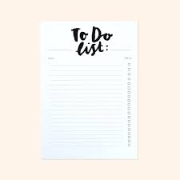

What Causes Poor Time Management
Time management is the ability to plan and control how someone spends the hours in a day to effectively accomplish their goals. People who have poor time management don’t do that. Those people end up letting tasks sit all the way until the last minute. Last minute activities make people feel more pressured and stressed out. That causes them to rush through things and give a poor quality of work or even miss deadlines. With a continuous cycle of poor quality, their productivity starts to slowly decline, causing a drastic shift in their time management. People start to procrastinate, be less organized, fail to focus on priorities, etc.

Changing Your Poor Time Management Habits
The time management activity is not that which requires extra skills. The only need is of some knowledge as to how to and be dedicated to implement a schedule. And it’s even more essential to balance day to day activities for better result and even success. The implemented change never being an easy task, it becomes a little more persistent when you understand the benefits. It will bring you a positive response. The benefit of time management is not just important for the development of the career. It has a significant impact on one’s personal life. A wise scheduling decision is involved and leads to self-discipline as there are many advantages of punctuality.
Tips for People with Poor Time Management
- Make a To-Do List
- Set Deadlines
- Allow Downtime for Yourself(not too much or too little)
- Prioritize
- Figure Out Your Desired Result
- Don't Spend too Much Time on the Little Details 
Click here for additional imformation about managing your time!